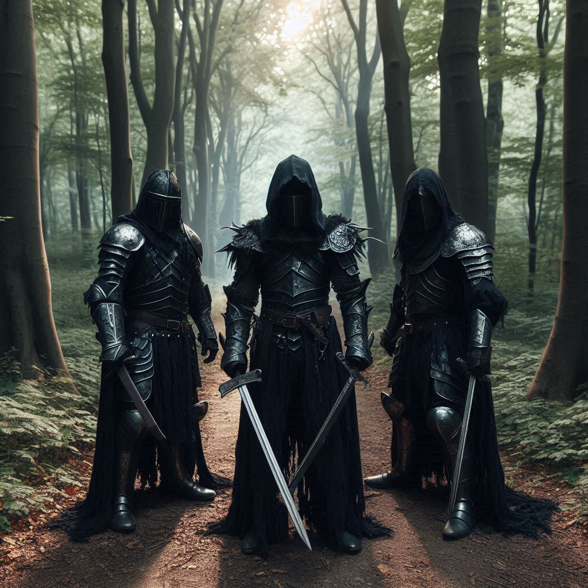
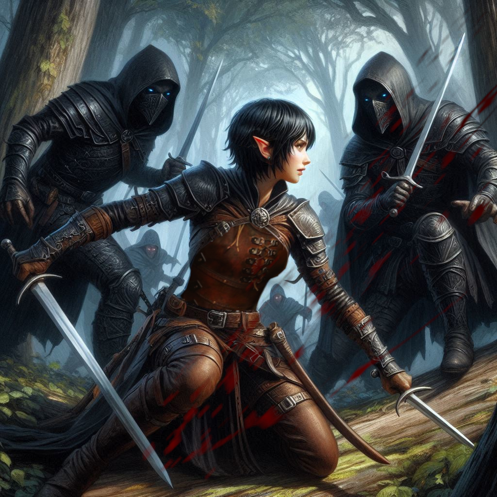
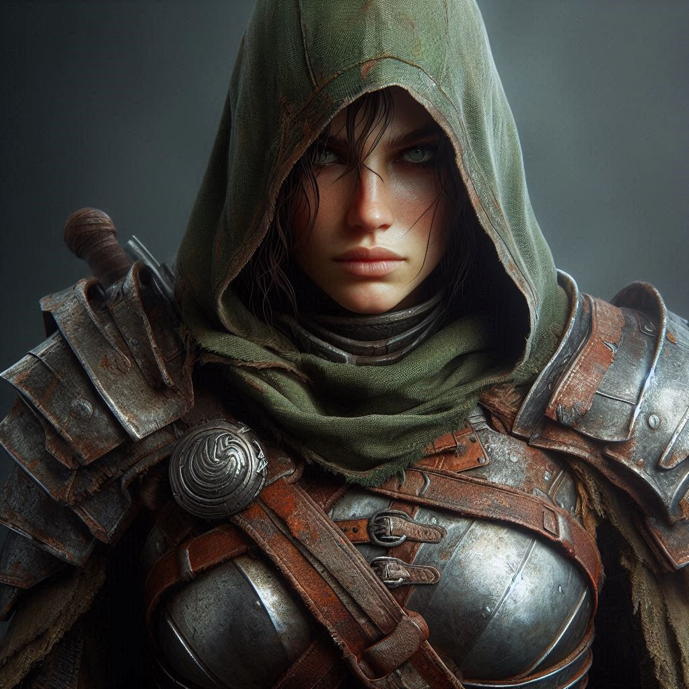

Hemlock Pass
The road to Hemlock Falls stretches ahead of you, winding through dense forests and over rugged hills. With each step, the weight of the mission presses heavier on your shoulders, but there’s no turning back now. The village of Belladonna is far behind, and the Magistrate’s orders are clear—capture Jorsh the Betrayer, dead or alive. The thought of seeing him again stirs something deep inside you, a mix of anger and something else you don’t dare name.
Your feet crunch over the gravel, the path narrowing as it snakes into the darkened woods. The air grows cooler, shadows weaving between the tall trees. A few hours into the journey, you begin to notice signs—subtle at first, but unmistakable. Scorched bark on the trees, patches of earth singed black. Magic. Dark magic. Jorsh’s presence lingers here, a reminder of just how dangerous he has become.
Your hand instinctively falls to the hilt of your dagger, and you press on, senses heightened. The forest is quiet, too quiet. Birds should be singing, the wind should be rustling the leaves, but all you hear is the steady rhythm of your own breathing. It sets you on edge. Something isn’t right.
As you round a bend in the trail, you spot it—a clearing up ahead, but it’s not empty. Scattered across the ground are strange markings etched in the dirt, symbols that make your skin crawl. Kneeling down to inspect them, you recognize a few—a ritual of some sort, likely left behind by Jorsh. His magic is growing stronger, darker. You can feel it in the air, thick and oppressive like a storm on the horizon.
He’s no longer the boy you once knew.
Before you can examine the symbols further, a sound from behind makes you freeze—footsteps. You rise quickly, hand gripping your dagger. Three figures emerge from the trees, faces hidden beneath hoods. They fan out, blocking your path. Each one carries a blade, but there’s something else in their posture, a confidence that tells you they’re not simple bandits. These men are here for you.
“Step aside,” you command, your voice steady despite the pulse of adrenaline surging through you.
The tallest of the group steps forward, his mouth twisting into a sneer. “Not happening, girl. The Minister of Trade has plans for you.”
The mention of the Minister sends a chill down your spine, but you don’t have time to dwell on it. The men draw their weapons, and in an instant, the clearing becomes a battleground. It’s three against one.
They strike first. You sidestep the closest thug, his blade slicing through the air where you stood moments before. Your training kicks in. Feet moving fast, you duck under another swing, spinning on your heel to slash at the second attacker’s leg. He stumbles, cursing, but you don’t stop. You can’t afford to hesitate. One mistake could cost you everything.
The third man lunges at you from behind, and you barely twist out of the way, his sword grazing your arm. Pain flares, but you push it aside, focusing on your next move. Your mind races, calculating the angles, the distances. The blacksmith’s lessons echo in your head: Never let them corner you. Control the space. Make them react.
You pivot and drive your boot into the ribs of the first thug, sending him sprawling into the dirt. He’s down, but not out. The second man is already back on his feet, rushing toward you, his blade aimed at your chest. This time, you don’t dodge. You meet him head-on, deflecting his sword with a sharp clang and driving your dagger into his shoulder. He howls in pain, dropping his weapon as he falls to his knees.
That leaves the leader. His eyes narrow, realizing he underestimated you. He circles slowly, watching for an opening, but you don’t give him one. Sweat drips down your brow as you match his movements, heart pounding in your chest. This is the moment that will decide whether you live or die.
He strikes—a flurry of blows, fast and brutal. You parry the first, block the second, but the third catches you off balance. His sword slams into your side, and you stumble, gasping for breath as pain explodes through your ribs. He grins, confident he’s won.
But he doesn’t see the dagger in your other hand.
With a sudden twist, you drive the blade upward, catching him in the side. His grin vanishes, replaced by a look of shock as he crumples to the ground.
Panting, you wipe the blood from your dagger and look down at the fallen men. The adrenaline is still coursing through you, but the danger has passed. For now. You step away, catching your breath, and glance back at the strange symbols etched in the dirt. The markings seem even darker now, as if the magic behind them is watching you, waiting for something to happen.
You know you’re on the right path, but it’s a dangerous one, and it’s only just beginning.
Pressing a hand to your wounded side, you move forward, leaving the bodies behind. Hemlock Falls is still far away, and Jorsh is waiting. But the thugs’ ambush has taught you something important: you’re not the only one with a stake in this game. The Minister of Trade is involved, and that means your mission is more complicated than you ever imagined.